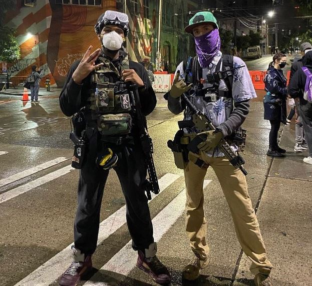

USSA Report: Github gets blacked and pics from inside Veganzuela
Here are a few interesting items occurring in the United Socialist States of America this week.
Shithub announced they will be replacing the word "Master" as the name of the default branch name which they hope will help by "removing racially-charged language"1 from the open-sores platform. Github/Microshit "developer" Johannes Schindelin was quoted in the issue comments saying he was prepared to bow to his BLMasters:
"At this point, I don't think it matters what the intention behind the word is. It incites emotional distress. So we should move away from it."
Other useless "software developers" following suit include OpenSSL, Curl, and Powershell. (archived)
The Supreme Court ruled Monday afternoon that if you have employees that cosplay furries or someone of the opposite gender that you are stuck with them for the foreseeable future, so expect offense from the masses.
The Republic of Veganzuela inside Seattle is entering it's second week, even as US President Donald Trump threatened to https://archive.is/W984k restore "law and order" by dismantling the area surrendered by Seattle police. A white flag was not used in the surrender so as not to incite racial tensions.
Persons armed with AR-15's helpfully collect the $10 for black people tax upon entry.

Once inside, visitors are treated to sights such as lush gardens and the luxury accommodations that dot the landscape of this idyllic socialist paradise.
A separate piece will document any further activity in and around the Veganzuelan border.
1. i.e. Language or words that upset BALM, SW's, and other niggers. ↩